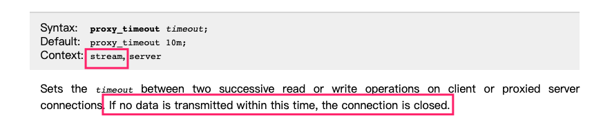

学好排除问题的方法，有助于提高生产力。

1. 缓冲区限制修改
你是时候该学习学习 Redis 数据库了！
Redis 为了解决输出缓冲区消息大量堆积的隐患，设置了一些自身的保护机制，主要采用以下两种限制措施：
- 大小限制
- 当某一客户端缓冲区超过设定值后直接关闭连接
- 持续性限制
- 当某一客户端缓冲区持续一段时间占用过大空间时关闭连接
我们登录 Redis 交互式终端之后，可以通过 CONFIG GET xxx 查看，可以找到客户端输出缓冲区的默认配置如下所示。
# 查看
$ redis-cli -h 127.0.0.1 -a "test"
127.0.0.1:6379> CONFIG GET client-output-buffer-limit
1) "client-output-buffer-limit"
2) "normal 0 0 0 slave 268435456 67108864 60 pubsub 33554432 8388608 60"
# 找到客户端输出缓冲区的默认配置
client-output-buffer-limit normal 0 0 0
client-output-buffer-limit replica 256mb 64mb 60
client-output-buffer-limit pubsub 32mb 8mb 60
对应 Redis 的客户端链接来说，不同客户端有不同策略，策略如下。并且下述三种规则都是可以修改的，可以通过 CONFIG SET 命令设置或者直接修改 redis.conf 配置文件。
- 普通客户端
- 对于普通客户端来说，限制为
0，也就是不限制，因为普通客户端通常采用阻塞式的消息应答模式。何谓阻塞式呢？如发送请求，等待返回，再发送请求，再等待返回，这样一个过程就是典型的阻塞式了。这种模式下，通常不会导致Redis服务器输出缓冲区的堆积膨胀。
- 对于普通客户端来说，限制为
- Pub/Sub 客户端
- 对于Pub/Sub 客户端(也就是发布/订阅模式)，默认的大小限制条件为
8M，当输出缓冲区超过8M时，会直接关闭连接。 持续性限制就是，当客户端缓冲区大小持续60秒超过2M，则关闭客户端连接。
- 对于Pub/Sub 客户端(也就是发布/订阅模式)，默认的大小限制条件为
- slave 客户端
- 对于
slave客户端来说，大小限制是256M，持续性限制是当客户端缓冲区大小持续60秒超过64M，则关闭客户端连接。
- 对于
在使用 celery 的 AsyncResult 等待数据结果的时候，在 task_result.get() 这里报错了，提示连接被服务端中断了。这个时候就需要看下，Redis服务器的对应日志信息了，看看是否提示 buffer limits 等报错提示信息。如果你使用的是 Redis 容器的话，可以使用 docker logs -f xxx 的方式查看。然而默认的日志级别比价高，而且默认镜像里面没有对应配置文件，需要将对应的 Redis 配置文件映射到容器里面，之后重启服务即可。
# Celery调用
task = async_task.delay()
task_result = AsyncResult(task.id)
with allow_join_result():
origin = task_result.get()
task_result.forget()
# 报错提示信息
Traceback (most recent call last):
File "/usr/local/lib/python3.6/dist-packages/celery/worker/consumer/consumer.py", line 318, in start
......
File "/usr/local/lib/python3.6/dist-packages/redis/connection.py", line 193, in _read_from_socket
raise ConnectionError(SERVER_CLOSED_CONNECTION_ERROR)
redis.exceptions.ConnectionError: Connection closed by server.
那如何调整 Redis 的缓冲区限制呢？首先，我们可以，通过登录交互式终端来临时修改缓冲区的限制。使用 config set 方法进行修改，即可。
# 修改方式
config set client-output-buffer-limit 'slave 1024mb 256mb 300'
config set client-output-buffer-limit 'pubsub 1024mb 256mb 300'
config set client-output-buffer-limit 'replica 1024mb 256mb 300'
其次，还有一个办法就是关闭复制输出缓冲区的限制，最后重启 Redis 服务。为了永久生效，最好还是将如下配置写入 Redis 服务的配置文件中。
# 设置关闭缓冲区限制
config set client-output-buffer-limit 'slave 0 0 0'
config set client-output-buffer-limit 'pubsub 0 0 0'
config set client-output-buffer-limit 'replica 0 0 0'
# 将如下配置写入Redis配置文件
client-output-buffer-limit normal 0 0 0
client-output-buffer-limit pubsub 1024mb 128mb 300
client-output-buffer-limit replica 1024mb 256mb 300
2. 相关问题处理
通过设置 Redis 输出缓冲区限制来解决！
咳咳咳，言归正传！话说我们部署的一个服务，因为涉及到多个服务且为了保障在故障的使用可以快速进行切换减少故障事件，所以在处理连接数据库等服务的操作都是直接使用了 Nginx 的 TCP 转发。即服务连接本地固定端口，然后通过 stream 进行代理转发。但是，使用没多久，发现一个问题，就是并发上传文件的时候，会出现小概率解析直接报错的情况。因为是小概率事件，所以很难复现，好不容易复现了，结果通过日志没有看到太多有用的信息，只看到如下的报错信息，然后就没有然后了。
[2020-02-24] consumer: Connection to broker lost. Trying to re-establish the connection...
Traceback (most recent call last):
File "/usr/local/lib/python3.6/dist-packages/celery/worker/consumer/consumer.py", line 318, in start
blueprint.start(self)
......
File "/usr/local/lib/python3.6/dist-packages/redis/connection.py", line 316, in read_response
response = self._buffer.readline()
File "/usr/local/lib/python3.6/dist-packages/redis/connection.py", line 248, in readline
self._read_from_socket()
File "/usr/local/lib/python3.6/dist-packages/redis/connection.py", line 193, in _read_from_socket
raise ConnectionError(SERVER_CLOSED_CONNECTION_ERROR)
redis.exceptions.ConnectionError: Connection closed by server.
有上述的报错得知，就是因为服务连接 Redis 异常，然后 re-establish 重连，这是 server 端关闭导致抛出异常信息了。继续对日志进行分析，发现上述的报错信息每隔十分钟(600s)就会出现一次。其初，怀疑是因为转发的 Nginx 配置导致了，但是对配置进行的调试还是有上述问题。经过了好几天的排除，才发现解决的方向跑偏了，最后发现是因为 proxy_timeout 的默认设置导致的。

从 Nginx 的官方文档 中知道，proxy_timeout 参数的作用是，设置客户端或代理服务器连接上两次连续的读取或写入操作之间的超时，如果在此时间内没有数据传输，则连接将关闭。因为我们连接 Redis 使用的是 celery 工具，所以排除下其 issus 有没有相关的信息。可悲的是，并没有。后来，在 Celery 的官方文档 的工具配置参数中其找到了关于 redis 超时的相关配置。
发现有很多参数，都是在 celery4.4.1 的最新版本才添加的，而我们服务使用的是 celery4.4.0 版本，即不支持上述配置。随即抱着试一试的态度，在环境中升级到了最新的版本，然后重启服务，解决报错消失了。困扰许久的问题，就这么解决了？热泪盈眶啊！为了弄清楚在 4.4.1 版本中到底加入了什么导致该问题修复了，看了下对应的 更新内容。发现在新版本中，连接 Redis 服务的时候加了 _reconnect_pubsub 方法，即 Pub/Sub 客户端加了 re-try 函数保证链接的文档。
def _reconnect_pubsub(self):
self._pubsub = None
self.backend.client.connection_pool.reset()
# task state might have changed when the connection was down so we
# retrieve meta for all subscribed tasks before going into pubsub mode
metas = self.backend.client.mget(self.subscribed_to)
metas = [meta for meta in metas if meta]
for meta in metas:
self.on_state_change(self._decode_result(meta), None)
self._pubsub = self.backend.client.pubsub(
ignore_subscribe_messages=True,
)
self._pubsub.subscribe(*self.subscribed_to)
这里需要注意的是，修改代码库里面的 requirements.txt 文件的时候，因为 celery 工具自身也依赖其他第三方的库。所以更新的时候，其他的第三方库也需要一并更新，不然会出现意想不到的惊喜。建议使用下来这种方式来添加 celery 工具，保证更新版本的时候一起更新。
# requirements.txt
celery[redis, kombu]
3. 注意事项
需要的参数无法在启动前配置的话，自己构建 Docker 镜像才是王道！
我们这里设置的 client-output-buffer-limit 参数不能再启动的的时候直接修改，只能在服务启动之后通过 config set 来做修改。如果我们对外部署服务的话，还需要使用命令才做修改，很不方便，所以不如我们自行构建 Docker 镜像来在内部做修改的配置变更，这样更新加的好。